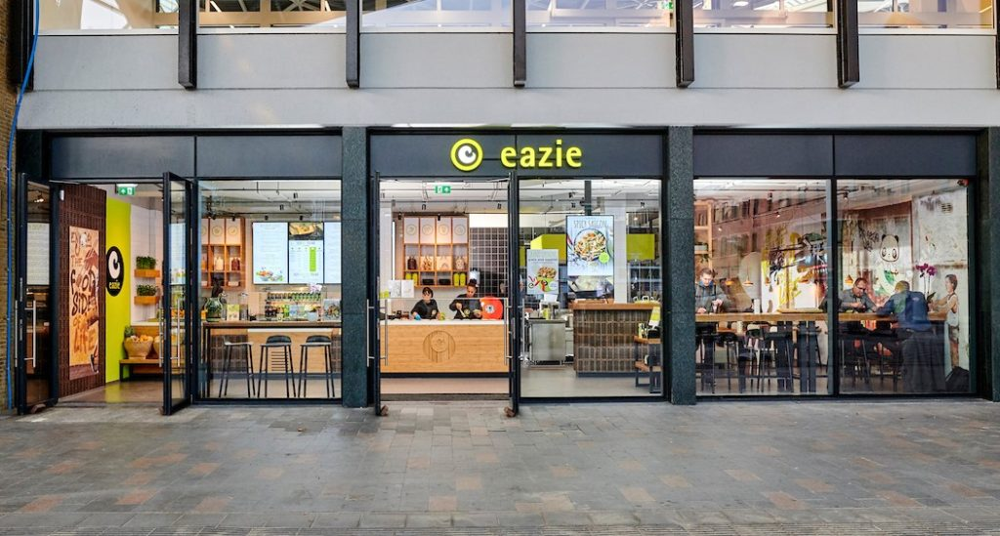

Paulius Litinskas
Junior UX designer
I started working here since april 2018, and stopped my work there at the start of December 2019. This was the first job, I managed to stay in for such a long time, during those years I learned a lot of things, started to understand Dutch language, also learned how to speak a bit of it. At the start I was only delivering food, but then my manager saw the potential in me, because I was always working really hard with my head down, and he decided to give me a raise in my hourly wage, and a couple of months after, I was promoted to working in the restaurant from time to time, when it gets busy. Although, when I started my UXD studies at The Hague university of Applied Sciences, I did not have that much time to work, because I also really wanted to get to know my class better, and at the start of December, I decided to stop working there, so I could focus on my university assignments more.